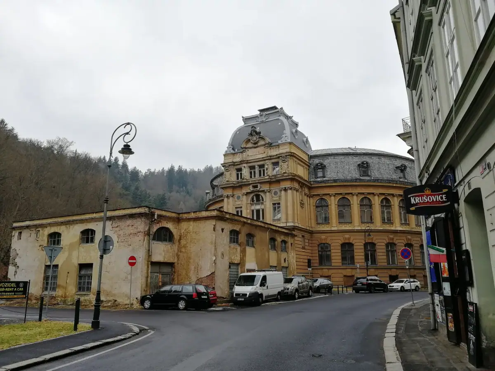
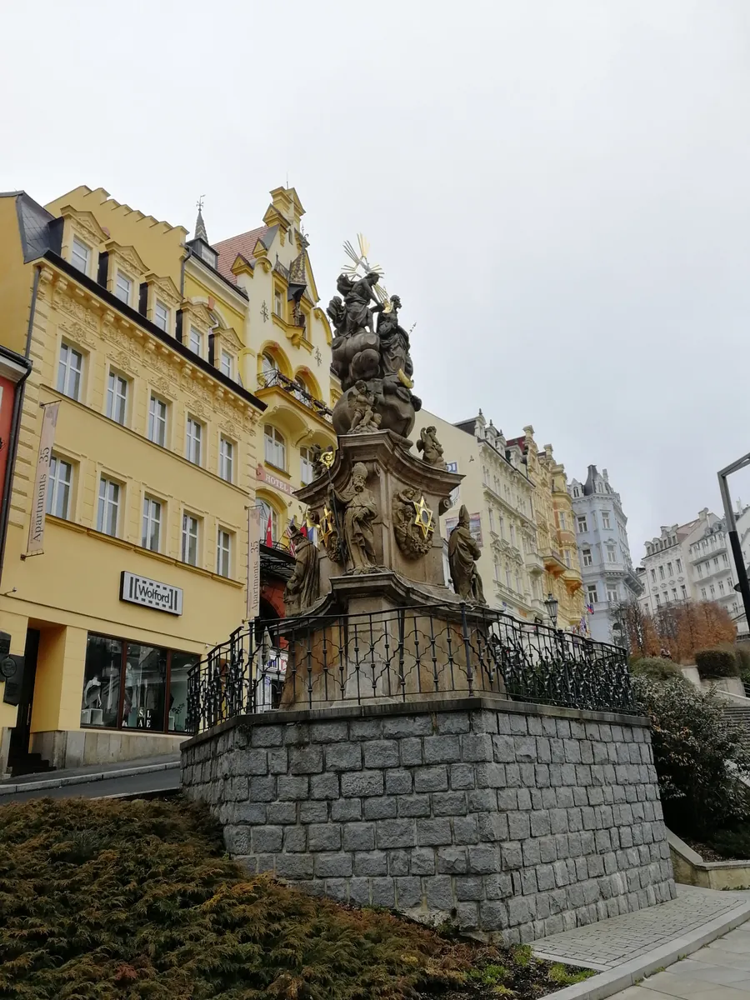
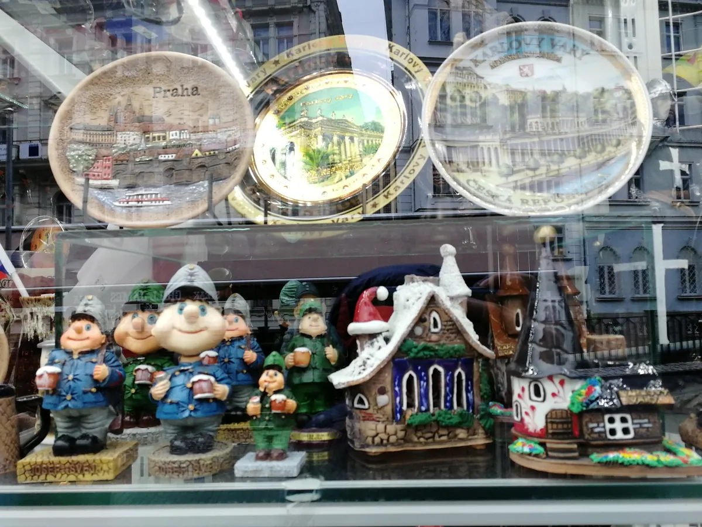
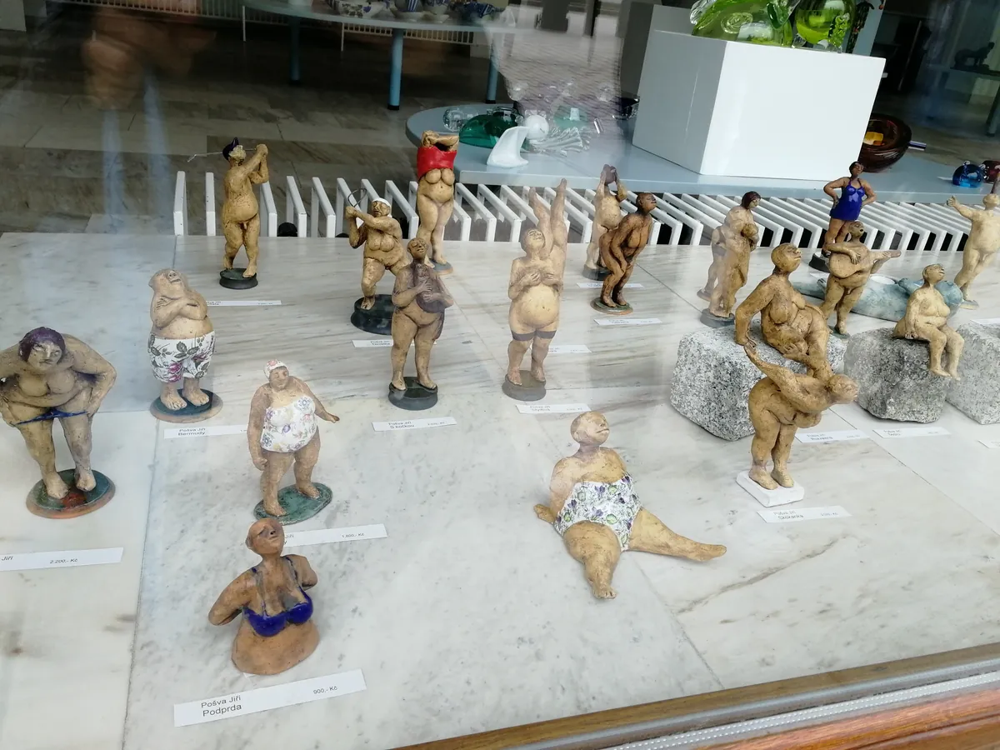
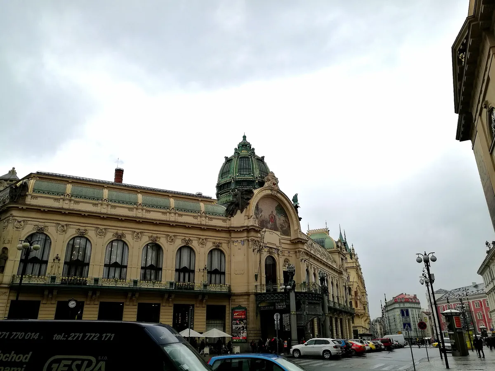

卡罗维发利：一座把温泉和瓷器都做成产业的波西米亚小城
Karlovy Vary — a Bohemian town that turned spa and porcelain into industries.

（2017 年 · 捷克 · 卡罗维发利）
说明：关于「鼹鼠的故事」作者兹德涅克·米勒，他实际出生在布拉格附近的克拉德诺，并非卡罗维发利本地人；但小鼹鼠的周边商品几乎铺满了捷克所有旅游小镇的纪念品店，卡罗维发利也不例外，所以在当地看到的更可能是随处可见的小鼹鼠周边，而不是「故乡遗迹」，此处如实标注，不夸大为「这是他的家乡」。
一座因为一只鹿而诞生的城
卡罗维发利的建城传说很浪漫：14 世纪，神圣罗马帝国皇帝查理四世在这一带打猎，射伤了一只鹿，鹿带伤跑进山谷，猎犬追进泉水里，皇帝这才发现这处温热的泉眼。经御医化验，泉水被证实对多种疾病有奇效，查理四世下令在此建城，「卡罗维发利」这个名字直译过来就是「查理的温泉」。这座城 1349 年正式始建，泉水中含有的矿物质多达 30 多种，历史上马克思、贝多芬、彼得大帝、歌德都曾专程来此疗养。今天全城有 13 处主要泉眼、300 多个小喷泉，水温最高能到 72 摄氏度，游客习惯买一个当地特制的小瓷壶，一边散步一边沿着几条巴洛克风格的温泉回廊，一处一处地喝过去——这套「喝温泉」的仪式感，是卡罗维发利和大多数「泡温泉」的疗养地最不一样的地方。


苏联时期，这里是整个东欧集团的「高级疗养院」
你说去看了前苏联时期的养老/疗养设施，这条线索背后是一段挺完整的历史。二战后到 1989 年，捷克斯洛伐克进入社会主义时期，卡罗维发利凭借得天独厚的温泉资源，被整个东欧集团（苏联、民主德国、波兰等华约国家）共同选定为高规格的工人疗养胜地——由国家和工会出资，把原本服务欧洲权贵的温泉酒店，大批改造成面向「劳动模范」、工会会员和干部的疗养设施，一部分是原有的巴洛克老建筑被直接征用，一部分是社会主义时期新建的建筑，比如著名的 Hotel Thermal——1970 年代建成的玻璃盒子造型，是典型的社会主义现代主义风格，和老城里那些精雕细琢的巴洛克温泉回廊放在同一条街上，形成了鲜明的年代反差，今天这栋楼依然是卡罗维发利国际电影节的主会场。也就是说，你看到的那些「苏联养老设施」，本质上是冷战时期整个华约体系把这座城市当成「集体福利疗养地」使用留下的痕迹——这是理解卡罗维发利近现代史很关键的一块，和它中世纪的皇家温泉起源，完全是两套逻辑。


瓷的摆具，其实是水晶——而且是「国王的水晶」
你说街边小店里很多「瓷的摆具」，大概率其实是波西米亚水晶或者当地瓷器工艺品——卡罗维发利本身就是波西米亚水晶工艺最重要的发源地之一，这里最有名的品牌是 Moser。1857 年，雕刻师兼商人路德维希·摩瑟（Ludwig Moser）在卡罗维发利开了一间雕刻工作室和水晶商店，后来发展成享誉全球的奢侈水晶品牌——不含铅、采用钾钙玻璃，以纯手工吹制、切割、雕刻工艺著称。这个品牌 20 年内就成了奥匈帝国皇帝弗朗茨·约瑟夫一世的宫廷供应商，后来英国国王爱德华七世、英国女王伊丽莎白二世、西班牙国王阿方索十三世都是它的客户，因此被称为「国王的水晶」。2011 年，Moser 成为法国精品行业联合会（Comité Colbert）第一个非法国籍会员，和香奈儿、爱马仕这些顶级品牌站到了同一个圈层里。今天 Moser 在卡罗维发利本地还留着工厂和博物馆，可以直接参观玻璃从原料到成品的全过程。
一个地方真正扎实的产业，很少是规划出来的，它是被这片土地最独特的那点禀赋，一点一点喂出来的。
——董立鑫 海鑫汇创始人兼执行总裁，新加坡世贸秘书长兼首席运营官
写在最后
卡罗维发利这座城市有点像一个层层叠叠的时间切片：最底层是查理四世打猎留下的皇家传说，中间一层是两百年来欧洲权贵专属的疗养胜地和由此催生的 Moser 水晶产业，再上面一层是冷战时期华约集团把它变成集体福利疗养院的历史，最上面一层才是今天你我这样的游客，提着小瓷壶沿着温泉回廊边走边喝。几种完全不同的时代和身份，叠在同一片山谷里，谁也没把谁完全覆盖掉。
本文整理自董立鑫（Bruce Dong）海外产业考察记录，首发于海鑫汇。